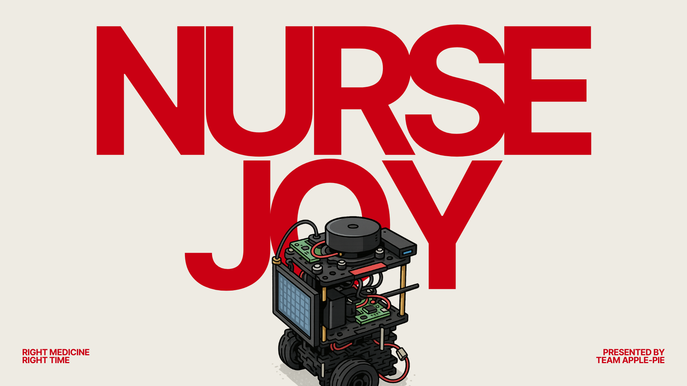
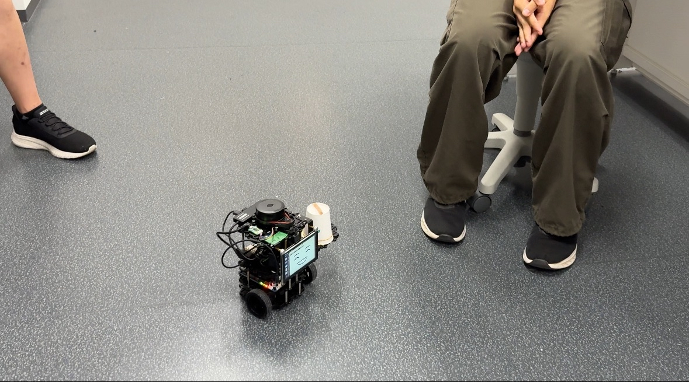

Healthcare Robotics / User Research / Robot Control
NURSE JOY
A pill-delivery and patient-support robot concept exploring how a small autonomous device could help reduce routine workload in clinical care spaces.

Snapshot
A small care robot designed around medication timing and nurse workload.
Medical robot concept
Researcher + Robot / Control Designer
User research, market research, robot design, testing, keyboard control
Working robot prototype, presentation, test flow, control code
Research frame
The opportunity was routine support, not replacing human care.
Nurses and patients
I looked at care moments where nurses repeat time-sensitive delivery tasks while still needing to stay available for higher-touch patient needs.
Hospital service robots
Market research helped us understand common healthcare robot patterns: delivery, route control, reliability, readable status, and trust in shared spaces.
Right medicine, right time
The concept focused on a clear task: transport medication or supplies in a way that feels useful, legible, and easy to supervise.
Design process
I moved between research, physical build decisions, and robot behavior.
Understand the care context
I helped define user needs through user research and market research, then translated them into requirements for medication delivery and patient support.
Design and test the robot
I contributed to the robot design, tested movement and interaction details, and watched how the physical prototype behaved around a seated user.
Code the control behavior
I worked on the keyboard press control code so the robot could respond to basic directional commands during testing and demonstration.
Interaction logic
The control flow needed to be simple enough for reliable prototype testing.
Directional commands create a fast testing interface for the prototype.
The robot responds to movement instructions so the team can test delivery paths.
We evaluate navigation, spacing, stopping, and how understandable the robot feels.
Prototype test
Testing made the robot feel less like an idea and more like a care workflow.

The test helped us observe scale, movement readability, distance from people, and whether the robot's delivery behavior felt understandable in a clinical environment. My coding work supported this test by making movement controllable through keyboard input.
Outcome
A prototype that connected research, physical design, and controllable behavior.
NURSE JOY became a working robotics concept for medication delivery and patient support. From my angle, the project was valuable because it required both design thinking and engineering execution: understanding the care setting, shaping the robot concept, testing the physical build, and coding the basic control behavior needed to demonstrate movement.
Reflection
Healthcare robots need clarity before complexity.
This project helped me think about robotics as an interaction design problem. A robot in a care environment needs to communicate what it is doing, where it is going, and how people can safely respond to it.
It also pushed me to connect research and implementation. The prototype only became meaningful when the user context, market patterns, physical design, testing, and control code worked together.